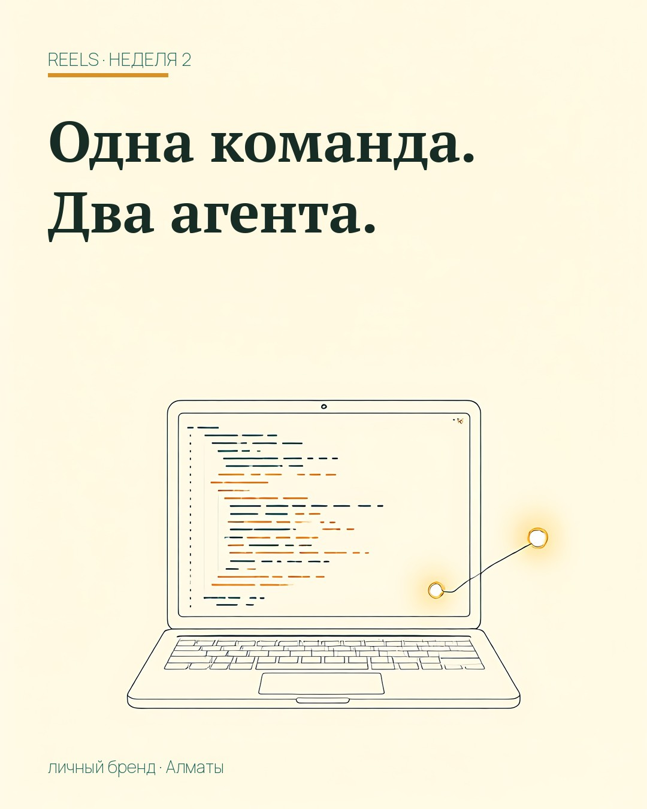
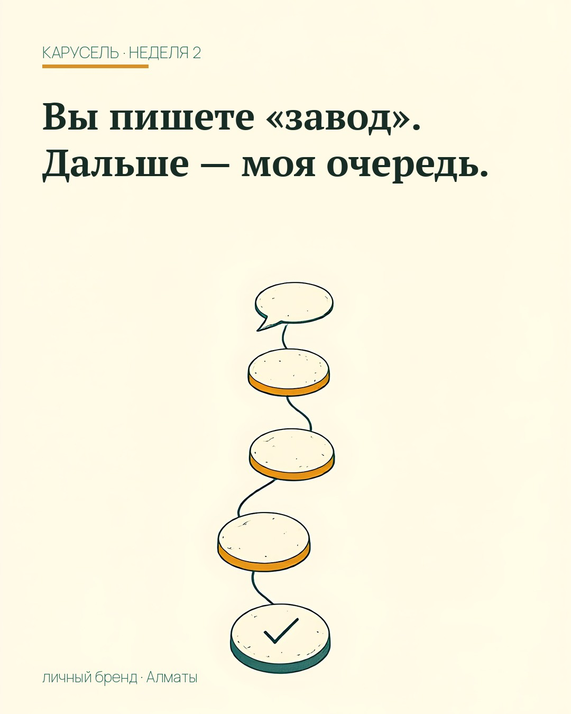
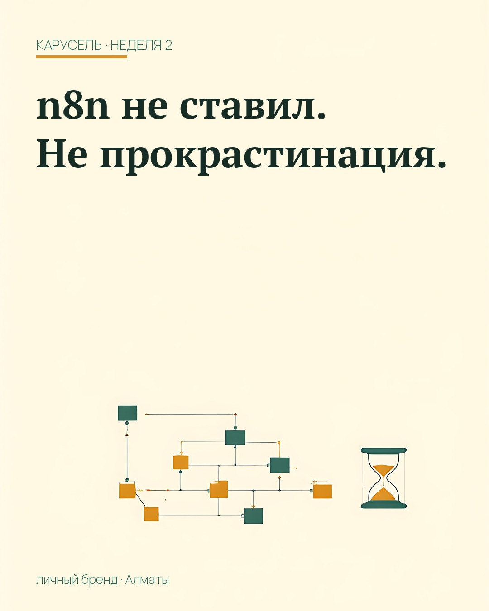
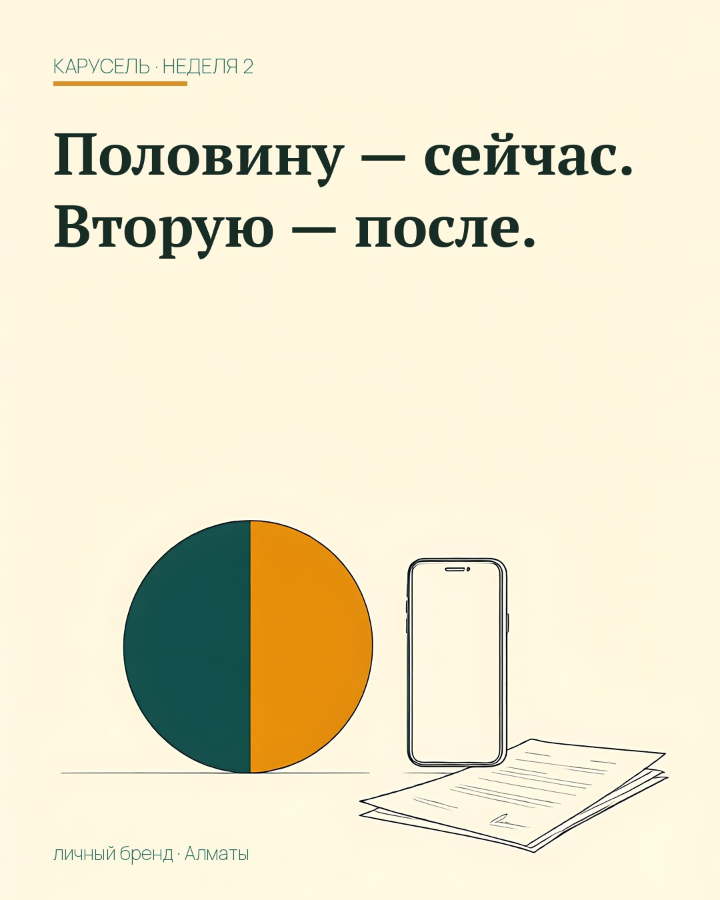

Как это собрано
Отчёт радара: 10 тем, «не брать», проверка редактора и выбор 7
Входы радара: проверенные факты недели со ссылками и что уже вышло.
Модели: тексты — agnes-2.5-pro, обложки — agnes-image-2.5-flash (фон), заголовок наложен кодом шрифтом PT Serif.
Скрипт: tools/zavod.py, инструкция — в README.
Обложки
1080×1350. Фон сгенерирован Agnes без текста (исходники — в _src/), заголовок наложен кодом.




Семь материалов
| День | Формат | Хук | Текст |
|---|---|---|---|
| Пн 23.11 | Reels | Одна строка в терминале. Два агента уже пишут. | открыть |
| Вт 24.11 | Карусель 8 сл. | Вы пишете «завод». Дальше — моя очередь. | открыть |
| Ср 25.11 | Reels | GPT-6.2 Astra вышла. Мой завод на Agnes. И это не лояльность. | открыть |
| Чт 26.11 | Карусель 7 сл. | n8n не ставил. Не прокрастинация. | открыть |
| Пт 27.11 | Stories 4 кадра | Тёплый список есть. Писать не начал. | открыть |
| Сб 28.11 | Карусель 7 сл. | Половину — сейчас. Вторую — после. | открыть |
| Вс 29.11 | Reels | Алматы. «ИИ забрал мою профессию». Я скажу иначе. | открыть |
Музыку и публикацию в Instagram делает человек. Скрипт сохраняет файлы, но ничего не публикует.